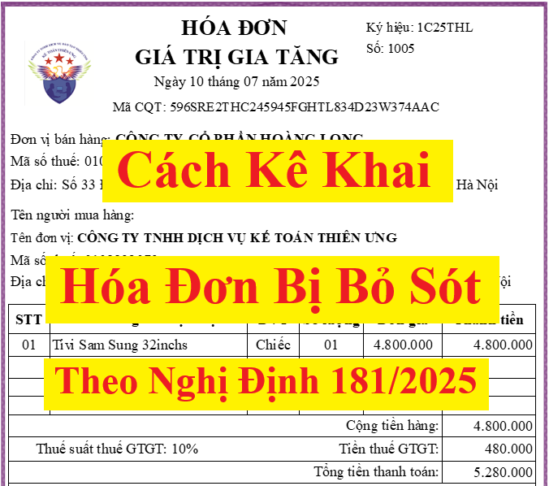

Kê khai sót hóa đơn đầu ra năm trước? Kê khai sót hóa đơn đầu vào xử lý thế nào? Hướng dẫn cách kê khai hóa đơn đầu vào bỏ sót, kê khai hóa đơn đầu ra bị bỏ sót các công văn mới nhất năm 2026
I. Cách kê khai hóa đơn đầu vào bị bỏ sót:
1. Căn cứ hướng dẫn kê khai hóa đơn đầu vào bị bỏ sót:
1.1. Quy định về kê khai hóa đơn đầu vào bị bỏ sót mới nhất năm 2026:
Thực hiện theo quy định tại điểm đ, khoản 1, điều 14 của Luật thuế GTGT số 48/2024/QH15 như sau thì:
Điều 14. Khấu trừ thuế giá trị gia tăng đầu vào
1. Cơ sở kinh doanh nộp thuế giá trị gia tăng theo phương pháp khấu trừ thuế được khấu trừ thuế giá trị gia tăng đầu vào như sau:
đ) Thuế giá trị gia tăng đầu vào phát sinh trong tháng, quý nào được kê khai, khấu trừ khi xác định số thuế phải nộp của tháng, quý đó. Số thuế giá trị gia tăng đầu vào chưa được khấu trừ hết trong tháng, quý thì được khấu trừ vào tháng, quý tiếp theo.
Trường hợp cơ sở kinh doanh phát hiện số thuế giá trị gia tăng đầu vào khi kê khai, khấu trừ bị sai, sót thì được khai thuế trước khi cơ quan thuế, cơ quan có thẩm quyền công bố quyết định kiểm tra thuế, thanh tra thuế như sau:
Người nộp thuế thực hiện khai bổ sung vào tháng, quý phát sinh số thuế giá trị gia tăng đầu vào bị sai, sót nếu việc khai thuế vào tháng, quý phát sinh số thuế giá trị gia tăng đầu vào bị sai, sót làm tăng số thuế phải nộp hoặc giảm số thuế được hoàn; người nộp thuế phải nộp đủ số tiền thuế phải nộp tăng thêm hoặc bị thu hồi số tiền thuế đã được hoàn tương ứng và nộp tiền chậm nộp vào ngân sách nhà nước (nếu có).
Người nộp thuế thực hiện khai vào tháng, quý phát hiện sai, sót nếu việc khai thuế vào tháng, quý phát sinh số thuế giá trị gia tăng đầu vào bị sai, sót làm giảm số tiền thuế phải nộp hoặc chỉ làm tăng hoặc giảm số thuế giá trị gia tăng còn được khấu trừ chuyển sang tháng, quý sau;
Theo khoản 6, điều 23 của Nghị định 181/2025/NĐ-CP hướng dẫn Luật Thuế giá trị gia tăng có hiệu lực từ ngày 01/7/2025 thì:
6. Trường hợp cơ sở kinh doanh phát hiện số thuế giá trị gia tăng đầu vào khi kê khai, khấu trừ bị sai, sót thì được khai thuế trước khi cơ quan thuế, cơ quan có thẩm quyền công bố quyết định kiểm tra thuế, thanh tra thuế như sau:
a) Người nộp thuế thực hiện khai bổ sung vào tháng, quý phát sinh số thuế giá trị gia tăng đầu vào bị sai, sót nếu việc khai thuế vào tháng, quý phát sinh số thuế giá trị gia tăng đầu vào bị sai, sót làm tăng số thuế phải nộp hoặc giảm số thuế được hoàn của tháng, quý đó; người nộp thuế phải nộp đủ số tiền thuế phải nộp tăng thêm hoặc bị thu hồi số tiền thuế đã được hoàn tương ứng và nộp tiền chậm nộp vào ngân sách nhà nước (nếu có).
b) Người nộp thuế thực hiện khai vào tháng, quý phát hiện sai, sót nếu việc khai thuế được thực hiện vào tháng, quý phát sinh thuế giá trị gia tăng đầu vào bị sai, sót làm giảm số tiền thuế phải nộp hoặc chỉ làm tăng hoặc giảm số thuế giá trị gia tăng còn được khấu trừ chuyển sang tháng, quý sau.
Vậy thì:
Trường hợp nào sẽ thực hiện khai vào tháng, quý phát sinh số thuế GTGT đầu vào bị sai, sót?
Trường hợp nào sẽ thực hiện khai vào tháng, quý phát hiện sai, sót?
Như các bạn đã biết thì thuế GTGT là loại thuế có kỳ kê khai theo tháng hoặc theo quý (tùy theo từng điều kiện của doanh nghiệp áp dụng)
+ "Tháng, quý phát hiện sai sót": là tháng hoặc quý phát hiện ra có số thuế GTGT đầu vào bị sai, sót
+ Còn "Tháng, quý phát sinh số thuế giá trị gia tăng đầu vào bị sai, sót": là tháng hoặc quý bị sai, sót
Nếu công ty bạn thuộc đối tượng kê khai thuế GTGT theo quý thì xác định theo quý
Còn nếu công ty bạn thuộc đối tượng kê khai thuế GTGT theo tháng thì xác định theo tháng
Còn nếu công ty bạn thuộc đối tượng kê khai thuế GTGT theo tháng thì xác định theo tháng
Ví dụ: Công ty Kế Toán Diệu Tâm thuộc đối tượng kê khai thuế GTGT theo quý
Ngày 20/05/2026, phát hiện ra quý 1/2026 đã kê khai sót hóa đơn đầu vào số 10005 được lập ngày 10/02/2026 (Chưa kê khai hóa đơn đầu vào 10005 này vào tờ khai thuế GTGT của quý 1/2026)
=> Qúy phát sinh số thuế GTGT đầu vào bị sai, sót: là quý 2/2026
=> Qúy phát sinh số thuế GTGT đầu vào bị sai, sót: là quý 2/2026
Theo điểm đ, khoản 1, điều 14 của Luật thuế GTGT số 48/2024/QH15 hoặc theo khoản 6, điều 23 của Nghị định 181/2025/NĐ-CP thì: Thuế giá trị gia tăng đầu vào phát sinh trong tháng, quý nào được kê khai, khấu trừ khi xác định số thuế phải nộp của tháng, quý đó
Mà hóa đơn đầu vào số 10005 được lập ngày 10/02/2026 tức là phát sinh trong quý 1/2026 => Được kê khai, khấu trừ khi xác định số thuế phải nộp của quý 1/2026
Nhưng vì quý 1/2026 chưa kê khai hóa đơn đầu vào số 10005 này nên đã phát sinh ra việc kê khai sót
=> Qúy phát hiện sai sót: là quý 2/2026 (ngày phát hiện ra kê khai sót là ngày 20/05/2026 => thuộc vào quý 2/2026)
Trường hợp 1: Khi việc khai thuế vào tháng, quý phát sinh số thuế giá trị gia tăng đầu vào bị sai, sót làm tăng số thuế phải nộp hoặc giảm số thuế được hoàn
Thì sẽ: Kê khai vào tháng, quý phát sinh số thuế GTGT đầu vào bị sai, sót
Trường hợp 2: Khi việc khai thuế vào tháng, quý phát sinh số thuế giá trị gia tăng đầu vào bị sai, sót làm giảm số tiền thuế phải nộp hoặc chỉ làm tăng hoặc giảm số thuế giá trị gia tăng còn được khấu trừ chuyển sang tháng, quý sau;
Thì sẽ: Kê khai vào kỳ phát hiện sai sót
Chúng ta thấy rằng: Khi kê khai sót đầu vào (kê khai thiếu đầu vào) => Sẽ phải kê khai tăng số thuế đầu vào đã kê khai sót đó lên => Mà khi kê khai tăng đầu vào thì chỉ có thể dẫn tới:
Làm giảm số tiền thuế phải nộp hoặc chỉ làm tăng số thuế giá trị gia tăng còn được khấu trừ chuyển sang kỳ sau;
=> Thuộc vào Trường hợp 2 => Sẽ thực hiện: Kê khai vào kỳ phát hiện sai sót
Ví dụ: Công ty Kế Toán Diệu Tâm thuộc đối tượng kê khai thuế GTGT theo quý
Ngày 10/07/2026, phát hiện ra quý 1/2026 đã kê khai sót 1 hóa đơn đầu vào phát sinh ngày 20/02/2026
=> Qúy phát hiện sai sót: là quý 3/2026 (ngày phát hiện là 10/07/2026 thuộc vào quý 3/2026)
=> Qúy phát sinh sai sót: là quý 1/2026 (hóa đơn đầu vào phát sinh ngày 20/02/2026 thuộc quý 1/2026 => Vì không kê khai hóa đơn đầu vào này vào kỳ quý 1 nên làm cho kỳ quý 1/2026 phát sinh việc kê khai sai, sót)
=> Công ty Kế Toán Diệu Tâm sẽ thực hiện kê khai hóa đơn đầu vào bị bỏ sót này vào kỳ phát hiện là kỳ quý 3/2026
CHỐT LẠI: Năm 2026, nếu như doanh nghiệp mà phát hiện ra kê khai sót hóa đơn đầu vào (kê khai sót số thuế GTGT đầu vào) thì sẽ kê khai vào kỳ phát hiện
1.2. Quy định về kê khai hóa đơn đầu vào bị bỏ sót trước ngày 01/07/2025:
Theo quy định tại điểm đ khoản 6 Điều 1 Luật số 31/2013/QH13 quy định về khấu trừ thuế GTGT đầu vào
và
Theo quy định tại khoản 8 Điều 14 Thông tư số 219/2013/TT-BTC ngày 31/12/2013 của Bộ Tài chính hướng dẫn nguyên tắc khấu trừ thuế GTGT đầu vào thì:

Điều 14. Nguyên tắc khấu trừ thuế giá trị gia tăng đầu vào
...
8. Thuế GTGT đầu vào phát sinh trong kỳ nào được kê khai, khấu trừ khi xác định số thuế phải nộp của kỳ đó, không phân biệt đã xuất dùng hay còn để trong kho.
Trường hợp cơ sở kinh doanh phát hiện số thuế GTGT đầu vào khi kê khai, khấu trừ bị sai sót thì được kê khai, khấu trừ bổ sung trước khi cơ quan thuế, cơ quan có thẩm quyền công bố quyết định kiểm tra thuế, thanh tra thuế tại trụ sở người nộp thuế.
Vậy là:
Đối với Hóa đơn GTGT đầu vào các kỳ trước bị sót chưa kê khai thì doanh nghiệp được kê khai bổ sung vào kỳ kê khai (tháng, quý) phát sinh hóa đơn.
Ví dụ 1: Công ty Kế Toán Diệu Tâm thuộc đối tượng kê khai thuế GTGT theo quý
Vào tháng 5/2025, công ty Diệu Tâm phát hiện ra đã kê khai sót 1 hóa đơn đầu vào phát sinh vào ngày 15/02/2025 (thuộc kỳ quý 1/2025)
=> Công ty Diệu Tâm sẽ làm sẽ thực hiện kê khai điều bổ sung hóa đơn này vào kỳ quý 1/2025 (để kê khai điều chỉnh tăng đầu vào theo giá trị và tiền thuế của hóa đơn bị bỏ sót này)
=> Công ty Diệu Tâm sẽ làm sẽ thực hiện kê khai điều bổ sung hóa đơn này vào kỳ quý 1/2025 (để kê khai điều chỉnh tăng đầu vào theo giá trị và tiền thuế của hóa đơn bị bỏ sót này)
Ví dụ 2: Công ty An Thịnh thuộc đối tượng kê khai thuế GTGT theo tháng
Vào tháng 4/2025, công ty Bảo An phát hiện ra đã kê khai sót 1 hóa đơn đầu vào phát sinh vào ngày 15/01/2025 (thuộc kỳ quý tháng 1/2025)
=> Công ty An Thịnh sẽ làm sẽ thực hiện kê khai điều bổ sung hóa đơn này vào kỳ tháng 1/2025 (để kê khai điều chỉnh tăng đầu vào theo giá trị và tiền thuế của hóa đơn bị bỏ sót này)
=> Công ty An Thịnh sẽ làm sẽ thực hiện kê khai điều bổ sung hóa đơn này vào kỳ tháng 1/2025 (để kê khai điều chỉnh tăng đầu vào theo giá trị và tiền thuế của hóa đơn bị bỏ sót này)
2. Một vài các công văn hướng dẫn cách kê khai hóa đơn đầu vào bị bỏ sót trước ngày 01/07/2025 đáng chú ý:
Công văn 7445/CTQNA-KK của Cục Thuế tỉnh Quảng Nam V/v kê khai bổ sung hồ sơ khai thuế giá trị gia tăng:
Kính gửi: - Phòng Kê khai và Kế toán thuế; Phòng Quản lý hộ kinh doanh, cá nhân và thu khác; Phòng Tuyên truyền và hỗ trợ NNT; Các Phòng Thanh tra Kiểm tra số 1, 2, 3. - Các Chi cục Thuế trực thuộc Cục Thuế. Thời gian qua Cục Thuế tỉnh Quảng Nam theo dõi nhận thấy trong quá trình thực hiện Luật thuế giá trị gia tăng, Luật Quản lý thuế và các văn bản hướng dẫn thi hành, các Phòng, các Chi cục Thuế còn gặp một số vướng mắc khi hướng dẫn người nộp thuế kê khai bổ sung hồ sơ khai thuế GTGT, nay Cục Thuế tỉnh Quảng Nam hướng dẫn một số nội dung về kê khai bổ sung hồ sơ khai thuế giá trị gia tăng cụ thể như sau: - Tại điểm đ khoản 6 Điều 1 Luật số 31/2013/QH13 Luật sửa đổi bổ sung một số điều của Luật Thuế GTGT ngày 19/6/2013 của Quốc hội quy định: “đ) Thuế giá trị gia tăng đầu vào phát sinh trong tháng nào được kê khai, khấu trừ khi xác định số thuế phải nộp của tháng đó. Trường hợp cơ sở kinh doanh phát hiện số thuế giá trị gia tăng đầu vào khi kê khai, khấu trừ bị sai sót thì được kê khai, khấu trừ bổ sung trước khi cơ quan thuế công bố quyết định kiểm tra thuế, thanh tra thuế tại trụ sở người nộp thuế. ” - Tại khoản 8 Điều 14 Thông tư 219/2013/TT-BTC ngày 31/12/2013 của Bộ Tài chính hướng dẫn thi hành Luật thuế GTGT quy định: “Điều 14. Nguyên tắc khấu trừ thuế giá trị gia tăng đầu vào … 8. Thuế GTGT đầu vào phát sinh trong kỳ nào được kê khai, khấu trừ khi xác định số thuế phải nộp của kỳ đó, không phân biệt đã xuất dùng hay còn để trong kho.” - Tại Điều 47 Luật Quản lý thuế số 38/2019/QH14 ngày 13/6/2019 của Quốc hội quy định: “Điều 47. Khai bổ sung hồ sơ khai thuế 1. Người nộp thuế phát hiện hồ sơ khai thuế đã nộp cho cơ quan thuế có sai, sót thì được khai bổ sung hồ sơ khai thuế trong thời hạn 10 năm kể từ ngày hết thời hạn nộp hồ sơ khai thuế của kỳ tính thuế có sai, sót nhưng trước khi cơ quan thuế, cơ quan có thẩm quyền công bố quyết định thanh tra, kiểm tra. 2. Khi cơ quan thuế, cơ quan có thẩm quyền đã công bố quyết định thanh tra, kiểm tra thuế tại trụ sở của người nộp thuế thì người nộp thuế vẫn được khai bổ sung hồ sơ khai thuế; cơ quan thuế thực hiện xử phạt vi phạm hành chính về quản lý thuế đối với hành vi quy định tại Điều 142 và Điều 143 của Luật này. 3. Sau khi cơ quan thuế, cơ quan có thẩm quyền đã ban hành kết luận, quyết định xử lý về thuế sau thanh tra, kiểm tra tại trụ sở của người nộp thuế thì việc khai bổ sung hồ sơ khai thuế được quy định như sau: a) Người nộp thuế được khai bổ sung hồ sơ khai thuế đối với trường hợp làm tăng số tiền thuế phải nộp, giảm số tiền thuế được khấu trừ hoặc giảm số tiền thuế được miên, giảm, hoàn và bị xử phạt vi phạm hành chính về quản lý thuế đối với hành vi quy định tại Điều 142 và Điều 143 của Luật này; b) Trường hợp người nộp thuế phát hiện hồ sơ khai thuế có sai, sót nếu khai bổ sung làm giảm số tiền thuế phải nộp hoặc làm tăng số tiền thuế được khấu trừ, tăng số tiền thuế được miễn, giảm, hoàn thì thực hiện theo quy định về giải quyết khiếu nại về thuế. 4. Hồ sơ khai bổ sung hồ sơ khai thuế bao gồm: a) Tờ khai bổ sung; b) Bản giải trình khai bổ sung và các tài liệu có liên quan. …” - Tại khoản 4 Điều 7 Nghị định 126/2020/NĐ-CP ngày 19/10/2020 của Chính phủ quy định: “ 4. Người nộp thuế được nộp hồ sơ khai bổ sung cho từng hồ sơ khai thuế có sai, sót theo quy định tại Điều 47 Luật Quản lý thuế và theo mẫu quy định của Bộ trưởng Bộ Tài chính. Người nộp thuế khai bổ sung như sau: a) Trường hợp khai bổ sung không làm thay đổi nghĩa vụ thuế thì chỉ phải nộp Bản giải trình khai bổ sung và các tài liệu có liên quan, không phải nộp Tờ khai bổ sung. … b) Người nộp thuế khai bổ sung dẫn đến tăng số thuế phải nộp hoặc giảm số thuế đã được ngân sách nhà nước hoàn trả thì phải nộp đủ số tiền thuế phải nộp tăng thêm hoặc số tiền thuế đã được hoàn thừa và tiền chậm nộp vào ngân sách nhà nước (nếu có). Trường hợp khai bổ sung chỉ làm tăng hoặc giảm số thuế giá trị gia tăng còn được khấu trừ chuyển kỳ sau thì phải kê khai vào kỳ tính thuế hiện tại. Người nộp thuế chỉ được khai bổ sung tăng số thuế giá trị gia tăng đề nghị hoàn khi chưa nộp hồ sơ khai thuế của kỳ tính thuế tiếp theo và chưa nộp hồ sơ đề nghị hoàn thuế.” Căn cứ các quy định và hướng dẫn nêu trên thì việc kê khai bổ sung hồ sơ khai thuế giá trị gia tăng thực hiện: - Hồ sơ khai thuế giá trị gia tăng nộp cho cơ quan thuế có đánh dấu “Lần đầu”, hồ sơ khai bổ sung được tính từ hồ sơ tiếp theo của hồ sơ khai thuế lần đầu đã được chấp nhận. - Chỉ tiêu: “22-Thuế giá trị gia tăng còn được khấu trừ kỳ trước chuyển sang” trên hồ sơ khai thuế của kỳ tính thuế tiếp theo bằng với chỉ tiêu: “43-Thuế giá trị gia tăng còn được khấu trừ chuyển kỳ sau” trên tờ khai lần đầu đối với tờ khai 01/GTGT hoặc chỉ tiêu: “ 21-Thuế giá trị gia tăng chưa được hoàn kỳ trước chuyển sang” bằng với chỉ tiêu: “32-Thuế giá trị gia tăng đầu vào của dự án đầu tư chưa được hoàn chuyển kỳ sau” đối với tờ khai 02/GTGT. - Hóa đơn GTGT đầu vào các kỳ trước bị sai, sót chưa kê khai thì người nộp thuế được nộp hồ sơ khai bổ sung cho từng hồ sơ khai thuế có sai, sót theo quy định tại Điều 47 Luật Quản lý thuế, kê khai bổ sung vào kỳ kê khai (tháng, quý) tương ứng với thời điểm phát sinh hóa đơn. Ví dụ: Người nộp thuế phát hiện hóa đơn GTGT đầu vào tháng 01/2023 chưa kê khai thì thực hiện kê khai bổ sung tờ khai tháng 01/2023 hoặc quý I/2023 đối với người nộp thuế kê khai thuế GTGT theo quý. - Sau khi khai bổ sung chỉ làm tăng hoặc giảm số thuế GTGT còn được khấu trừ chuyển kỳ sau thì phải kê khai số thuế GTGT chênh lệch tương ứng vào các chỉ tiêu: “Điều chỉnh tăng”, “Điều chỉnh giảm” trên hồ sơ khai thuế lần đầu của kỳ tính thuế hiện tại. Cục Thuế tỉnh Quảng Nam đề nghị các phòng, các Chi cục Thuế nghiên cứu kỹ những nội dung liên quan đến việc kê khai bổ sung hồ sơ khai thuế giá trị gia tăng để tuyên truyền, hướng dẫn, hỗ trợ người nộp thuế thực hiện đúng quy định của pháp luật. Trong quá trình thực hiện nếu có khó khăn, vướng mắc kịp thời phản ánh về Cục Thuế (qua Phòng Kê khai và Kế toán Thuế) để được hướng dẫn./. (Cục Thuế gửi kèm tài liệu hướng dẫn các trường hợp kê khai bổ sung hồ sơ khai thuế giá trị gia tăng cụ thể để các phòng, các Chi cục Thuế tiện nghiên cứu, hướng dẫn NNT thực hiện)
|
Ngày 22/06/2023, Cục Thuế tỉnh Bắc Ninh đã ban hành công văn số: 2397 /CTBNI-KKKTT v/v hướng dẫn kê khai hoá đơn đầu vào bị bỏ sót
Kính gửi: Công ty TNHH Nefab Việt Nam
Mã số thuế: 2300889577
Địa chỉ: Lô D1-I, Khu công nghiệp Đại Đồng - Hoàn Sơn, xã Hoànn Sơn, huyện Tiên Du, tỉnh Bắc Ninh.
Ngày 22/06/2023, Cục Thuế tỉnh Bắc Ninh nhận được công văn số 2023-0621-NFVN đề ngày 21/06/2023 của Công ty TNHH Nefab Việt Nam (sau đây gọi tắt là “Công ty”) đề nghị hướng dẫn kê khai bổ sung hoá đơn đầu vào bị bỏ sót. Về vấn đề này, Cục Thuế tỉnh Bắc Ninh có ý kiến như sau:
Tại khoản 8 Điều 14 Thông tư số 219/2013/TT- BTC ngày 31/12/2013 của Bộ Tài chính hướng dẫn về thuế GTGT quy định:
“Điều 14. Nguyên tắc khấu trừ thuế giá trị gia tăng đầu vào
8. Thuế GTGT đầu vào phát sinh trong kỳ nào được kê khai, khấu trừ khi xác định số thuế phải nộp của kỳ đó, không phân biệt đã xuất dùng hay còn để trong kho...”
Tại Điều 47 Luật Quản lý thuế số 38/2019/QH14 ngày 13/06/2019 của Quốc hội quy định:
“Điều 47. Khai bổ sung hồ sơ khai thuế
1. Người nộp thuế phát hiện hồ sơ khai thuế đã nộp cho cơ quan thuế có sai sót thì được khai bổ sung hồ sơ khai thuế trong thời hạn 10 năm kể từ ngày hết thời hạn nộp hồ sơ khai thuế của kỳ tính thuế có sai sót nhưng trước khi cơ quan thuế, cơ quan có thẩm quyền công bố quyết định thanh tra, kiểm tra.
2. Khi cơ quan thuế, cơ quan có thẩm quyền đã công bổ quyết định thanh tra, kiểm tra thuế tại trụ sở của người nộp thuế thì người nộp thuế vẫn được khai bổ sung hồ sơ khai thuế; cơ quan thuế thực hiện xử phạt vi phạm hành chính về quản lý thuế đối với hành vi quy định tại Điều 142 và Điều 143 của Luật này.
3. Sau khi cơ quan thuế, cơ quan có thẩm quyền đã ban hành kết luận, quyết định xử lý về thuế sau thanh tra, kiểm tra tại trụ sở của người nộp thuế thì việc khai bổ sung hồ sơ khai thuế được quy định như sau:
a) Người nộp thuế được khai bổ sung hồ sơ khai thuế đối với trường hợp làm tăng số tiền thuế phải nộp, giảm số tiền thuế được khấu trừ hoặc giảm số tiền thuế được miễn, giảm, hoàn và bị xử phạt vi phạm hành chính về quản lý thuế đối với hành vi quy định tại Điều 142 và Điều 143 của Luật này;
b) Trường hợp người nộp thuế phát hiện hồ sơ khai thuế có sai sót nếu khai bổ sung làm giảm số tiền thuế phải nộp hoặc làm tăng số tiền thuế được khấu trừ, tăng số tiền thuế được miễn, giảm, hoàn thì thực hiện theo quy định về giải quyết khiếu nại về thuế.
4. Hồ sơ khai bổ sung hồ sơ khai thuế bao gồm:
a) Tờ khai bổ sung;
b) Bản giải trình khai bổ sung và các tài liệu có liên quan...
Tại khoản 4 Điều 7 Nghị định số 126/2020/NĐ-CP ngày 19/10/2020 của Chính phủ quy định như sau:
“4. Người nộp thuế được nộp hồ sơ khai bổ sung cho từng hồ sơ khai thuế có sai, sót theo quy định tại Điều 47 Luật Quản lý thuế và theo mẫu quy định của Bộ trưởng Bộ Tài chính. Người nộp thuế khai bổ sung như sau:
a) Trường hợp khai bổ sung không làm thay đổi nghĩa vụ thuế thì chỉ phải nộp Bản giải trình khai bổ sung và các tài liệu có liên quan, không phải nộp Tờ khai bổ sung.
Trường hợp chưa nộp hồ sơ khai quyết toán thuế năm thì người nộp thuế khai bổ sung hồ sơ khai thuế của tháng, quý có sai, sót, đồng thời tổng hợp số liệu khai bổ sung vào hồ sơ khai quyết toán thuế năm.
Trường hợp đã nộp hồ sơ khai quyết toán thuế năm thì chỉ khai bổ sung hồ sơ khai quyết toán thuế năm; riêng trường hợp khai bổ sung tờ khai quyết toán thuế thu nhập cá nhân đối với tổ chức, cá nhân trả thu nhập từ tiền lương, tiền công thì đồng thời phải khai bổ sung tờ khai tháng, quý có sai, sót tương ứng.
b) Người nộp thuế khai bổ sung dẫn đến tăng số thuế phải nộp hoặc giảm số thuế đã được ngân sách nhà nước hoàn trả thì phải nộp đủ số tiền thuế phải nộp tăng thêm hoặc số tiền thuế đã được hoàn thừa và tiền chậm nộp vào ngân sách nhà nước (nếu có).
Trường hợp khai bổ sung chỉ làm tăng hoặc giảm số thuế giá trị gia tăng còn được khấu trừ chuyển kỳ sau thì phải kê khai vào kỳ tính thuế hiện tại. Người nộp thuế chỉ được khai bổ sung tăng số thuế giá trị gia tăng đề nghị hoàn khi chưa nộp hồ sơ khai thuế của kỳ tính thuế tiếp theo và chưa nộp hồ sơ đề nghị hoàn thuế. ”
Căn cứ quy định và hướng dẫn nêu trên, trường hợp Công ty phát hiện hoá đơn đầu vào các tháng trước chưa kê khai thì Công ty được khai bổ sung hồ sơ khai thuế theo hướng dẫn tại Điều 47 Luật Quản lý thuế số 38/2019/QH14 ngày 13/06/2019 của Quốc hội và khoản 4 Điều 7 Nghị định 126/2020/NĐ-CP ngày 19/10/2022 của Chính phủ. Tức là:
- Kê khai bổ sung hóa đơn GTGT đầu vào bị bỏ sót tháng 9 năm 2022 vào tờ khai tháng 9 năm 2022;
- Kê khai bổ sung hóa đơn GTGT đầu vào bị bỏ sót tháng 12 năm 2022 vào tờ khai tháng 12 năm 2022;
- Kê khai bổ sung hóa đơn GTGT đầu vào bị bỏ sót tháng 1 năm 2023 vào tờ khai tháng 1 năm 2023;
Cục Thuế tỉnh Bắc Ninh trả lời để Công ty biết và thực hiện. Trong quá trình thực hiện nếu có điều gì vướng mắc, đề nghị Công ty liên hệ với Cục Thuế tỉnh Bắc Ninh (phòng Kê khai và Kế toán thuế - Số điện thoại: 0222.3826261 hoặc Phòng Tuyên truyền và Hỗ trợ người nộp thuế - Số điện thoại: 0222.3822347) để được hướng dẫn và giải đáp, „
Nơi nhận:
- Như trên;
- Lãnh đạo Cục;
- Các Phòng, các CCT thuộc Cục Thuế
- Website Cục Thuế;
- Lưu: VT, KKKTT (Itpmai - 7, 20)
|
Ngày 22/6/2023, Tổng cục Thuế đã ban hành Công văn số 2546/TCT-CS về việc khai bổ sung đối với hóa đơn bỏ sót, hóa đơn điều chỉnh, hóa đơn thay thế
1. Quy định pháp luật về thuế GTGT Căn cứ điểm đ khoản 6 Điều 1 Luật số 31/2013/QH13 sửa đổi, bổ sung một số điều của Luật Thuế giá trị gia tăng quy, định về khấu trừ thuế GTGT đầu vào; Căn cứ điểm g khoản 1 Điều 9 Nghị định số 209/2013/NĐ-CP ngày 18/12/2013 của Chính phủ quy định về khấu trừ thuế thuế GTGT đầu vào; Căn cứ khoản 8 Điều 14 Thông tư số 219/2013/TT-BTC ngày 31/12/2013 của Bộ Tài chính hướng dẫn nguyên tắc khấu trừ thuế GTGT đầu vào; Căn cứ Điều 8 Thông tư số 219/2013/TT-BTC ngày 31/12/2013 của Bộ Tài chính hướng dẫn về thời điểm xác định thuế GTGT; Căn cứ khoản 5 Điều 12 Thông tư 219/2013/TT-BTC ngày 31/12/2013 của Bộ Tài chính hướng dẫn về xác định số thuế GTGT phải nộp. 2. Quy định pháp luật về hóa đơn Căn cứ khoản 2 Điều 19 Nghị định số 123/2020/NĐ-CP ngày 19/10/2020 của Chính phủ quy định về xử lý hóa đơn có sai sót; Căn cứ Điều 7 Thông tư số 78/2021/TT-BTC ngày 17/9/2021 của Bộ Tài chính hướng dẫn về xử lý hóa đơn điện tử, bảng tổng hợp dữ liệu hóa đơn điện tử đã gửi cơ quan thuế có sai sót trong một số trường hợp; Căn cứ khoản 6 Điều 12 Thông tư số 78/2021/TT-BTC ngày 17/9/2021 của Bộ Tài chính hướng dẫn về chuyển tiếp. 3. Quy định pháp luật về thuế TNDN: Căn cứ khoản 5 Điều 1 Luật số 32/2013/QH13 ngày 19/6/2013 sửa đổi, bổ sung một số điều của Luật Thuế thu nhập doanh nghiệp quy định về các khoản chi được trừ và không được trừ; Căn cứ khoản 2 Điều 8 Nghị định số 218/2013/NĐ-CP ngày 26/12/2013 của Chính phủ quy định về thời điểm xác định doanh thu để tính thu nhập chịu thuế; 4. Quy định pháp luật về quản lý thuế Căn cứ Điều 47 Luật Quản lý thuế số 38/2019/QH14 ngày 13/6/2019 quy định về khai bổ sung hồ sơ khai thuế; Căn cứ khoản 1 Điều 59 Luật Quản lý thuế số 38/2019/QH14 ngày 13/6/2019 quy định về các trường hợp phải nộp tiền chậm nộp; Căn cứ khoản 4 Điều 7 Nghị định số 126/2020/NĐ-CP ngày 19/10/2020 của Chính phủ quy định về khai bổ sung hồ sơ khai thuế. Đề nghị Cục Thuế căn cứ các quy định nêu trên và tình hình thực tế để hướng dẫn thực hiện theo quy định. Tổng cục Thuế có ý kiến để Cục Thuế tỉnh Bạc Liêu, Cục Thuế thành phố Hà Nội, Cục Thuế thành phố Hải Phòng, Cục Thuế thành phố Hồ Chí Minh được biết./.
|
Sau đây, Kế Toán Diệu Tâm sẽ chi tiết hóa các quy định nêu trong Công văn số 2546/TCT-CS để các bạn hiểu rõ hơn:
Căn cứ điểm đ khoản 6 Điều 1 Luật số 31/2013/QH13 sửa đổi, bổ sung một số điều của Luật Thuế giá trị gia tăng quy, định về khấu trừ thuế GTGT đầu vào
Điều 1
Sửa đổi, bổ sung một số điều của Luật thuế giá trị gia tăng:
...
6. Điều 12 được sửa đổi, bổ sung như sau:
“Điều 12. Khấu trừ thuế giá trị gia tăng đầu vào
1. Cơ sở kinh doanh nộp thuế giá trị gia tăng theo phương pháp khấu trừ thuế được khấu trừ thuế giá trị gia tăng đầu vào như sau:
...
đ) Thuế giá trị gia tăng đầu vào phát sinh trong tháng nào được kê khai, khấu trừ khi xác định số thuế phải nộp của tháng đó. Trường hợp cơ sở kinh doanh phát hiện số thuế giá trị gia tăng đầu vào khi kê khai, khấu trừ bị sai sót thì được kê khai, khấu trừ bổ sung trước khi cơ quan thuế công bố quyết định kiểm tra thuế, thanh tra thuế tại trụ sở người nộp thuế.
Căn cứ điểm g khoản 1 Điều 9 Nghị định số 209/2013/NĐ-CP ngày 18/12/2013 của Chính phủ quy định về khấu trừ thuế thuế GTGT đầu vào
Điều 14. Nguyên tắc khấu trừ thuế giá trị gia tăng đầu vào
...
8. Thuế GTGT đầu vào phát sinh trong kỳ nào được kê khai, khấu trừ khi xác định số thuế phải nộp của kỳ đó, không phân biệt đã xuất dùng hay còn để trong kho.
Trường hợp cơ sở kinh doanh phát hiện số thuế GTGT đầu vào khi kê khai, khấu trừ bị sai sót thì được kê khai, khấu trừ bổ sung trước khi cơ quan thuế, cơ quan có thẩm quyền công bố quyết định kiểm tra thuế, thanh tra thuế tại trụ sở người nộp thuế.
Căn cứ khoản 8 Điều 14 Thông tư số 219/2013/TT-BTC ngày 31/12/2013 của Bộ Tài chính hướng dẫn nguyên tắc khấu trừ thuế GTGT đầu vào
Điều 14. Nguyên tắc khấu trừ thuế giá trị gia tăng đầu vào
...
8. Thuế GTGT đầu vào phát sinh trong kỳ nào được kê khai, khấu trừ khi xác định số thuế phải nộp của kỳ đó, không phân biệt đã xuất dùng hay còn để trong kho.
Trường hợp cơ sở kinh doanh phát hiện số thuế GTGT đầu vào khi kê khai, khấu trừ bị sai sót thì được kê khai, khấu trừ bổ sung trước khi cơ quan thuế, cơ quan có thẩm quyền công bố quyết định kiểm tra thuế, thanh tra thuế tại trụ sở người nộp thuế.
Căn cứ Điều 47 Luật Quản lý thuế số 38/2019/QH14 ngày 13/6/2019 quy định về khai bổ sung hồ sơ khai thuế;
Điều 47. Khai bổ sung hồ sơ khai thuế
1. Người nộp thuế phát hiện hồ sơ khai thuế đã nộp cho cơ quan thuế có sai, sót thì được khai bổ sung hồ sơ khai thuế trong thời hạn 10 năm kể từ ngày hết thời hạn nộp hồ sơ khai thuế của kỳ tính thuế có sai, sót nhưng trước khi cơ quan thuế, cơ quan có thẩm quyền công bố quyết định thanh tra, kiểm tra.
2. Khi cơ quan thuế, cơ quan có thẩm quyền đã công bố quyết định thanh tra, kiểm tra thuế tại trụ sở của người nộp thuế thì người nộp thuế vẫn được khai bổ sung hồ sơ khai thuế; cơ quan thuế thực hiện xử phạt vi phạm hành chính về quản lý thuế đối với hành vi quy định tại Điều 142 và Điều 143 của Luật này.
3. Sau khi cơ quan thuế, cơ quan có thẩm quyền đã ban hành kết luận, quyết định xử lý về thuế sau thanh tra, kiểm tra tại trụ sở của người nộp thuế thì việc khai bổ sung hồ sơ khai thuế được quy định như sau:
a) Người nộp thuế được khai bổ sung hồ sơ khai thuế đối với trường hợp làm tăng số tiền thuế phải nộp, giảm số tiền thuế được khấu trừ hoặc giảm số tiền thuế được miễn, giảm, hoàn và bị xử phạt vi phạm hành chính về quản lý thuế đối với hành vi quy định tại Điều 142 và Điều 143 của Luật này;
b) Trường hợp người nộp thuế phát hiện hồ sơ khai thuế có sai, sót nếu khai bổ sung làm giảm số tiền thuế phải nộp hoặc làm tăng số tiền thuế được khấu trừ, tăng số tiền thuế được miễn, giảm, hoàn thì thực hiện theo quy định về giải quyết khiếu nại về thuế.
4. Hồ sơ khai bổ sung hồ sơ khai thuế bao gồm:
a) Tờ khai bổ sung;
b) Bản giải trình khai bổ sung và các tài liệu có liên quan.
5. Đối với hàng hóa xuất khẩu, nhập khẩu, việc khai bổ sung hồ sơ khai thuế thực hiện theo quy định của pháp luật về hải quan.
1. Người nộp thuế phát hiện hồ sơ khai thuế đã nộp cho cơ quan thuế có sai, sót thì được khai bổ sung hồ sơ khai thuế trong thời hạn 10 năm kể từ ngày hết thời hạn nộp hồ sơ khai thuế của kỳ tính thuế có sai, sót nhưng trước khi cơ quan thuế, cơ quan có thẩm quyền công bố quyết định thanh tra, kiểm tra.
2. Khi cơ quan thuế, cơ quan có thẩm quyền đã công bố quyết định thanh tra, kiểm tra thuế tại trụ sở của người nộp thuế thì người nộp thuế vẫn được khai bổ sung hồ sơ khai thuế; cơ quan thuế thực hiện xử phạt vi phạm hành chính về quản lý thuế đối với hành vi quy định tại Điều 142 và Điều 143 của Luật này.
3. Sau khi cơ quan thuế, cơ quan có thẩm quyền đã ban hành kết luận, quyết định xử lý về thuế sau thanh tra, kiểm tra tại trụ sở của người nộp thuế thì việc khai bổ sung hồ sơ khai thuế được quy định như sau:
a) Người nộp thuế được khai bổ sung hồ sơ khai thuế đối với trường hợp làm tăng số tiền thuế phải nộp, giảm số tiền thuế được khấu trừ hoặc giảm số tiền thuế được miễn, giảm, hoàn và bị xử phạt vi phạm hành chính về quản lý thuế đối với hành vi quy định tại Điều 142 và Điều 143 của Luật này;
b) Trường hợp người nộp thuế phát hiện hồ sơ khai thuế có sai, sót nếu khai bổ sung làm giảm số tiền thuế phải nộp hoặc làm tăng số tiền thuế được khấu trừ, tăng số tiền thuế được miễn, giảm, hoàn thì thực hiện theo quy định về giải quyết khiếu nại về thuế.
4. Hồ sơ khai bổ sung hồ sơ khai thuế bao gồm:
a) Tờ khai bổ sung;
b) Bản giải trình khai bổ sung và các tài liệu có liên quan.
5. Đối với hàng hóa xuất khẩu, nhập khẩu, việc khai bổ sung hồ sơ khai thuế thực hiện theo quy định của pháp luật về hải quan.
Căn cứ khoản 4 Điều 7 Nghị định số 126/2020/NĐ-CP ngày 19/10/2020 của Chính phủ quy định về khai bổ sung hồ sơ khai thuế.
3.2. Quy định về thời hạn kê khai bổ sung trước ngày 01/01/2025:
Thực hiện theo quy định tại Điều 47 Luật Quản lý thuế số: 38/2019/QH14 như sau:
Trong đó:
* Đểm đ khoản 6 Điều 1 Luật số 31/2013/QH13:
Điều 7. Hồ sơ khai thuế
...
4. Người nộp thuế được nộp hồ sơ khai bổ sung cho từng hồ sơ khai thuế có sai, sót theo quy định tại Điều 47 Luật Quản lý thuế và theo mẫu quy định của Bộ trưởng Bộ Tài chính. Người nộp thuế khai bổ sung như sau:
a) Trường hợp khai bổ sung không làm thay đổi nghĩa vụ thuế thì chỉ phải nộp Bản giải trình khai bổ sung và các tài liệu có liên quan, không phải nộp Tờ khai bổ sung.
Trường hợp chưa nộp hồ sơ khai quyết toán thuế năm thì người nộp thuế khai bổ sung hồ sơ khai thuế của tháng, quý có sai, sót, đồng thời tổng hợp số liệu khai bổ sung vào hồ sơ khai quyết toán thuế năm.
Trường hợp đã nộp hồ sơ khai quyết toán thuế năm thì chỉ khai bổ sung hồ sơ khai quyết toán thuế năm; riêng trường hợp khai bổ sung tờ khai quyết toán thuế thu nhập cá nhân đối với tổ chức, cá nhân trả thu nhập từ tiền lương, tiền công thì đồng thời phải khai bổ sung tờ khai tháng, quý có sai, sót tương ứng.
b) Người nộp thuế khai bổ sung dẫn đến tăng số thuế phải nộp hoặc giảm số thuế đã được ngân sách nhà nước hoàn trả thì phải nộp đủ số tiền thuế phải nộp tăng thêm hoặc số tiền thuế đã được hoàn thừa và tiền chậm nộp vào ngân sách nhà nước (nếu có).
Trường hợp khai bổ sung chỉ làm tăng hoặc giảm số thuế giá trị gia tăng còn được khấu trừ chuyển kỳ sau thì phải kê khai vào kỳ tính thuế hiện tại. Người nộp thuế chỉ được khai bổ sung tăng số thuế giá trị gia tăng đề nghị hoàn khi chưa nộp hồ sơ khai thuế của kỳ tính thuế tiếp theo và chưa nộp hồ sơ đề nghị hoàn thuế.
3. Có được khai bổ sung hóa đơn đầu vào của kỳ tính thuế đã bị thanh tra không?
3.1. Quy định về thời hạn kê khai bổ sung từ ngày 01/01/2025 trở đi:
Thực hiện theo quy định tại khoản 6, điều 6 của Luật sửa đổi số: 56/2024/QH15 (Ban hành ngày 29/11/2024, có hiệu lực từ ngày 01/01/2025) Sửa đổi, bổ sung, bãi bỏ một số khoản của Điều 47 Luật Quản lý thuế số: 38/2019/QH14 như sau:
1. Người nộp thuế phát hiện hồ sơ khai thuế đã nộp cho cơ quan thuế có sai, sót thì được khai bổ sung hồ sơ khai thuế trong thời hạn 10 năm kể từ ngày hết thời hạn nộp hồ sơ khai thuế của kỳ tính thuế có sai, sót trong trường hợp sau đây:
a) Trước khi cơ quan thuế, cơ quan có thẩm quyền công bố quyết định thanh tra, kiểm tra;
b) Hồ sơ không thuộc phạm vi, thời kỳ thanh tra, kiểm tra thuế nêu tại quyết định thanh tra, kiểm tra thuế.
Đối với những nội dung thuộc phạm vi thanh tra, kiểm tra, người nộp thuế được bổ sung hồ sơ giải trình theo quy định của pháp luật về thuế, pháp luật về thanh tra và các trường hợp thực hiện theo kết luận, quy định của cơ quan chuyên ngành có thẩm quyền liên quan đến nội dung xác định nghĩa vụ thuế của người nộp thuế.
1. Người nộp thuế phát hiện hồ sơ khai thuế đã nộp cho cơ quan thuế có sai, sót thì được khai bổ sung hồ sơ khai thuế trong thời hạn 10 năm kể từ ngày hết thời hạn nộp hồ sơ khai thuế của kỳ tính thuế có sai, sót trong trường hợp sau đây:
a) Trước khi cơ quan thuế, cơ quan có thẩm quyền công bố quyết định thanh tra, kiểm tra;
b) Hồ sơ không thuộc phạm vi, thời kỳ thanh tra, kiểm tra thuế nêu tại quyết định thanh tra, kiểm tra thuế.
Đối với những nội dung thuộc phạm vi thanh tra, kiểm tra, người nộp thuế được bổ sung hồ sơ giải trình theo quy định của pháp luật về thuế, pháp luật về thanh tra và các trường hợp thực hiện theo kết luận, quy định của cơ quan chuyên ngành có thẩm quyền liên quan đến nội dung xác định nghĩa vụ thuế của người nộp thuế.
3.2. Quy định về thời hạn kê khai bổ sung trước ngày 01/01/2025:
Thực hiện theo quy định tại Điều 47 Luật Quản lý thuế số: 38/2019/QH14 như sau:
Điều 47. Khai bổ sung hồ sơ khai thuế
1. Người nộp thuế phát hiện hồ sơ khai thuế đã nộp cho cơ quan thuế có sai, sót thì được khai bổ sung hồ sơ khai thuế trong thời hạn 10 năm kể từ ngày hết thời hạn nộp hồ sơ khai thuế của kỳ tính thuế có sai, sót nhưng trước khi cơ quan thuế, cơ quan có thẩm quyền công bố quyết định thanh tra, kiểm tra.
2. Khi cơ quan thuế, cơ quan có thẩm quyền đã công bố quyết định thanh tra, kiểm tra thuế tại trụ sở của người nộp thuế thì người nộp thuế vẫn được khai bổ sung hồ sơ khai thuế; cơ quan thuế thực hiện xử phạt vi phạm hành chính về quản lý thuế đối với hành vi quy định tại Điều 142 và Điều 143 của Luật này.
3. Sau khi cơ quan thuế, cơ quan có thẩm quyền đã ban hành kết luận, quyết định xử lý về thuế sau thanh tra, kiểm tra tại trụ sở của người nộp thuế thì việc khai bổ sung hồ sơ khai thuế được quy định như sau:
a) Người nộp thuế được khai bổ sung hồ sơ khai thuế đối với trường hợp làm tăng số tiền thuế phải nộp, giảm số tiền thuế được khấu trừ hoặc giảm số tiền thuế được miễn, giảm, hoàn và bị xử phạt vi phạm hành chính về quản lý thuế đối với hành vi quy định tại Điều 142 và Điều 143 của Luật này;
b) Trường hợp người nộp thuế phát hiện hồ sơ khai thuế có sai, sót nếu khai bổ sung làm giảm số tiền thuế phải nộp hoặc làm tăng số tiền thuế được khấu trừ, tăng số tiền thuế được miễn, giảm, hoàn thì thực hiện theo quy định về giải quyết khiếu nại về thuế.
| Theo Công văn số 5090/TCT-KK ngày 14/11/2023 của Tổng cục Thuế về khai bổ sung hồ sơ khai thuế có sai sót sau thanh tra thuế: | ||||||
Kính gửi: Cục Thuế tỉnh Vĩnh Long.
Tổng cục Thuế nhận được Văn bản số 1079/CTVLO-KK ngày 1/8/2023 của Cục Thuế tỉnh Vĩnh Long về việc khai bổ sung hồ sơ khai thuế có sai sót sau thanh tra, kiểm tra thuế. Về nội dung này, Tổng cục Thuế có ý kiến như sau:Căn cứ khoản 1, điểm b khoản 3 Điều 47 Luật Quản lý thuế số 38/2019/QH14 quy định về khai bổ sung hồ sơ khai thuế; Căn cứ khoản 4 Điều 7 Nghị định số 126/2020/NĐ-CP ngày 19/10/2020 của Chính phủ quy định về hồ sơ khai bổ sung hồ sơ khai thuế; Căn cứ điểm đ khoản 6 Điều 1 Luật số 31/2013/QH13 quy định về khấu trừ thuế GTGT đầu vào; Căn cứ khoản 8 Điều 14 Thông tư số 219/2013/TT-BTC ngày 31/12/2013 của Bộ Tài chính hướng dẫn nguyên tắc khấu trừ thuế GTGT đầu vào. Căn cứ các quy định nêu trên, trường hợp Công ty Cổ phần du lịch Cửu Long phát hiện một số hóa đơn GTGT hàng hóa, dịch vụ mua vào bị bỏ sót phát sinh từ tháng 3/2019 đến 06/2021 vào thời điểm tháng 7/2023, sau khi Cục Thuế tỉnh Vĩnh Long ban hành quyết định số 721/QĐ-CTVLO ngày 22/12/2022 về việc xử phạt vi phạm hành chính về thuế sau thanh tra tại trụ sở của người nộp thuế niên độ năm 2019, năm 2020, năm 2021 thì thực hiện theo quy định tại điểm đ khoản 6 Điều 1 Luật số 31/2013/QH13 và khoản 3 Điều 47 Luật Quản lý thuế số 38/2019/QH14. Đề nghị Cục Thuế tỉnh Vĩnh Long khi có văn bản gửi Tổng cục Thuế phải có đánh giá vướng mắc theo quy định tại văn bản quy phạm pháp luật, từ đó đề xuất nội dung cụ thể để xử lý vướng mắc và phân tích rõ lý do đề xuất. Tổng cục Thuế trả lời để Cục Thuế tỉnh Vĩnh Long được biết và thực hiện./.
|
| Công văn số 4955/TCT-KK ngày 6/11/2023 của Tổng cục Thuế về việc khai bổ sung hồ sơ khai thuế đối với hóa đơn đầu vào bị bỏ sót | ||||||
Kính gửi: Cục Thuế tỉnh Nghệ An. Tổng cục Thuế nhận được công văn số 3561/CT-NVDTPC ngày 20/6/2023 của Cục Thuế tỉnh Nghệ An về việc xin ý kiến hướng dẫn việc khai bổ sung hồ sơ khai thuế. Về vấn đề này, Tổng cục Thuế có ý kiến như sau: Căn cứ khoản 1, điểm b khoản 3 Điều 47 Luật Quản lý thuế số 38/2019/QH14 có quy định về khai bổ sung hồ sơ khai thuế; Căn cứ khoản 4 Điều 7 Nghị định số 126/2020/NĐ-CP ngày 19/10/2020 quy định về hồ sơ khai bổ sung hồ sơ khai thuế; Căn cứ điểm đ khoản 6 Điều 1 Luật số 31/2013/QH13 quy định về khấu trừ thuế GTGT đầu vào; Căn cứ khoản 8 Điều 14 Thông tư số 219/2013/TT-BTC ngày 31/12/2013 của Bộ Tài chính hướng dẫn nguyên tắc khấu trừ thuế GTGT đầu vào. Căn cứ các quy định nêu trên, trường hợp Công ty Cổ phần Vilaconic phát hiện một số hóa đơn GTGT hàng hóa, dịch vụ mua vào bị bỏ sót phát sinh từ tháng 01/2022 đến tháng 08/2022 vào kỳ tính thuế tháng 09/2022 và tháng 10/2022, sau khi Cục Thuế tỉnh Nghệ An đã ban hành kết luận về việc kiểm tra trước hoàn thuế kỳ từ tháng 01/2022 đến tháng 08/2022 (ngày 7/10/2022) thì thực hiện theo quy định tại điểm đ khoản 6 Điều 1 Luật số 31/2013/QH13 và khoản 3 Điều 47 Luật Quản lý thuế số 38/2019/QH14. Tổng cục Thuế có ý kiến để Cục Thuế tỉnh Nghệ An được biết, thực hiện./.
|
| Công văn 4954/TCT-KK về khai bổ sung hồ sơ khai thuế đối với hóa đơn đầu vào bị bỏ sót do Tổng cục Thuế ban hành | ||||||||
Tổng cục Thuế nhận được văn bản số 03/2023-KT-PKBT ngày 21/09/2023 của Công ty TNHH MTV Pungkook Bến Tre về kê khai bổ sung khấu trừ thuế GTGT và đề nghị hoàn sau khi đã thực hiện kiểm tra tại trụ sở người nộp thuế. Về vấn đề này, Tổng cục Thuế có ý kiến như sau: Cán cứ khoản 1, điểm b khoản 3 Điều 47 Luật Quản lý thuế số 38/2019/QH14 có quy định về khai bổ sung hồ sơ khai thuế; Căn cứ khoản 4 Điều 7 Nghị định số 126/2020/NĐ-CP ngày 19/10/2020 quy định về hồ sơ khai bổ sung hồ sơ khai thuế; Căn cứ điểm đ khoản 6 Điều 1 Luật số 31/2013/QH13 quy định về khấu trừ thuế GTGT đầu vào; Căn cứ khoản 8 Điều 14 Thông tư số 219/2013/TT-BTC ngày 31/12/2013 của Bộ Tài chính hướng dẫn nguyên tắc khấu trừ thuế GTGT đầu vào. Căn cứ các quy định nêu trên, trường hợp Công ty TNHH MTV Pungkook Bến Tre phát hiện một số hóa đơn GTGT hàng hóa, dịch vụ mua vào bị bỏ sót phát sinh từ tháng 04/2023 vào kỳ tính thuế tháng 06/2023, sau khi Cục Thuế tỉnh Bến Tre đã ban hành kết luận về việc kiểm tra trước hoàn thuế kỳ tháng 04/2023 (ngày 22/6/2023) thì thực hiện theo quy định tại điểm đ khoản 6 Điều 1 Luật số 31/2013/QH13 và khoản 3 Điều 47 Luật Quản lý thuế số 38/2019/QH14. Tổng cục Thuế có ý kiến để Công ty được biết và thực hiện./.
|
Trong đó:
* Đểm đ khoản 6 Điều 1 Luật số 31/2013/QH13:
Điều 1
Sửa đổi, bổ sung một số điều của Luật thuế giá trị gia tăng:
...
6. Điều 12 được sửa đổi, bổ sung như sau:
“Điều 12. Khấu trừ thuế giá trị gia tăng đầu vào
1. Cơ sở kinh doanh nộp thuế giá trị gia tăng theo phương pháp khấu trừ thuế được khấu trừ thuế giá trị gia tăng đầu vào như sau:
...
đ) Thuế giá trị gia tăng đầu vào phát sinh trong tháng nào được kê khai, khấu trừ khi xác định số thuế phải nộp của tháng đó. Trường hợp cơ sở kinh doanh phát hiện số thuế giá trị gia tăng đầu vào khi kê khai, khấu trừ bị sai sót thì được kê khai, khấu trừ bổ sung trước khi cơ quan thuế công bố quyết định kiểm tra thuế, thanh tra thuế tại trụ sở người nộp thuế.
* Khoản 3 Điều 47 Luật Quản lý thuế số 38/2019/QH14:
Điều 47. Khai bổ sung hồ sơ khai thuế
...
3. Sau khi cơ quan thuế, cơ quan có thẩm quyền đã ban hành kết luận, quyết định xử lý về thuế sau thanh tra, kiểm tra tại trụ sở của người nộp thuế thì việc khai bổ sung hồ sơ khai thuế được quy định như sau:
a) Người nộp thuế được khai bổ sung hồ sơ khai thuế đối với trường hợp làm tăng số tiền thuế phải nộp, giảm số tiền thuế được khấu trừ hoặc giảm số tiền thuế được miễn, giảm, hoàn và bị xử phạt vi phạm hành chính về quản lý thuế đối với hành vi quy định tại Điều 142 và Điều 143 của Luật này;
b) Trường hợp người nộp thuế phát hiện hồ sơ khai thuế có sai, sót nếu khai bổ sung làm giảm số tiền thuế phải nộp hoặc làm tăng số tiền thuế được khấu trừ, tăng số tiền thuế được miễn, giảm, hoàn thì thực hiện theo quy định về giải quyết khiếu nại về thuế.
===========================================
II. Cách kê khai hóa đơn đầu ra bị bỏ sót:
Hóa đơn đầu ra xuất bán phát sinh kỳ nào thì phải thực hiện kê khai vào đó kỳ đó
Trường hợp phát hiện ra hóa đơn đầu ra bị bỏ sót thì phải thực hiện khai bổ sung, điều chỉnh cho kỳ tính thuế phát sinh hóa đơn đó theo quy định.
Ví dụ: Vào ngày 15/10/2025 (tức là Quý 3/2025), Công ty Kế Toán Diệu Tâm phát hiện hóa đơn GTGT đầu ra số 1000 phát sinh vào ngày 20/02/2025 (tức là phát sinh vào Quý 1/2025) chưa kê khai (tức là quý 1/2025 đã kê khai bỏ sót hóa đơn đầu ra này) thì:
+ Công ty Kế Toán Diệu Tâm không được kê khai hóa đơn đầu ra số 1000 vào kỳ phát hiện (kỳ quý 3/2025)
+ Mà Công ty Kế Toán Diệu Tâm sẽ phải thực hiện khai bổ sung, điều chỉnh hồ sơ khai thuế GTGT của kỳ tính thuế Quý 1/2025: điều chỉnh tăng doanh thu và số thuế GTGT đầu ra trên hóa đơn đầu ra số 1000 vào tờ khai thuế GTGT của kỳ quý 1/2025
+ Công ty Kế Toán Diệu Tâm không được kê khai hóa đơn đầu ra số 1000 vào kỳ phát hiện (kỳ quý 3/2025)
+ Mà Công ty Kế Toán Diệu Tâm sẽ phải thực hiện khai bổ sung, điều chỉnh hồ sơ khai thuế GTGT của kỳ tính thuế Quý 1/2025: điều chỉnh tăng doanh thu và số thuế GTGT đầu ra trên hóa đơn đầu ra số 1000 vào tờ khai thuế GTGT của kỳ quý 1/2025
Chi tiết cách kê khai bổ sung điều chỉnh, các bạn xem tại đây:
----------------------------------------------------------------------
Kế toán Diệu Tâm xin chúc các bạn thành công!
Các bạn muốn học cách kê khai thuế GTGT, TNCN hàng tháng/quý. Cách xác định chi phí được trừ - không được trừ. Cách lập tờ khai Quyết toán thuế TNCN, TNDN thực tế ...
- > Có thể tham gia lớp học kế toán thuế thực tế chuyên sâu.
----------------------------------------------------------------------------------
Các bạn muốn học cách kê khai thuế GTGT, TNCN hàng tháng/quý. Cách xác định chi phí được trừ - không được trừ. Cách lập tờ khai Quyết toán thuế TNCN, TNDN thực tế ...
- > Có thể tham gia lớp học kế toán thuế thực tế chuyên sâu.
----------------------------------------------------------------------------------